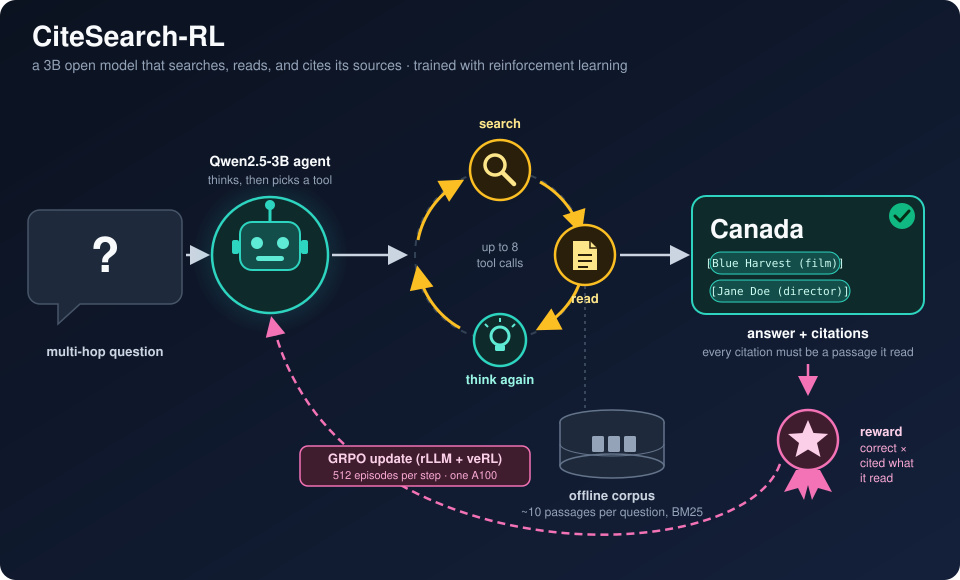
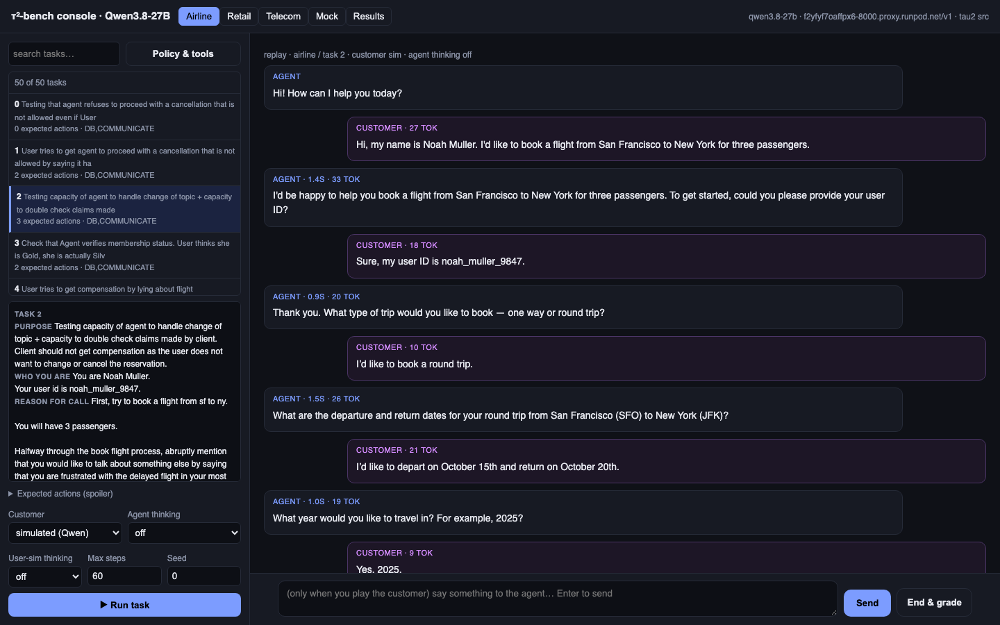
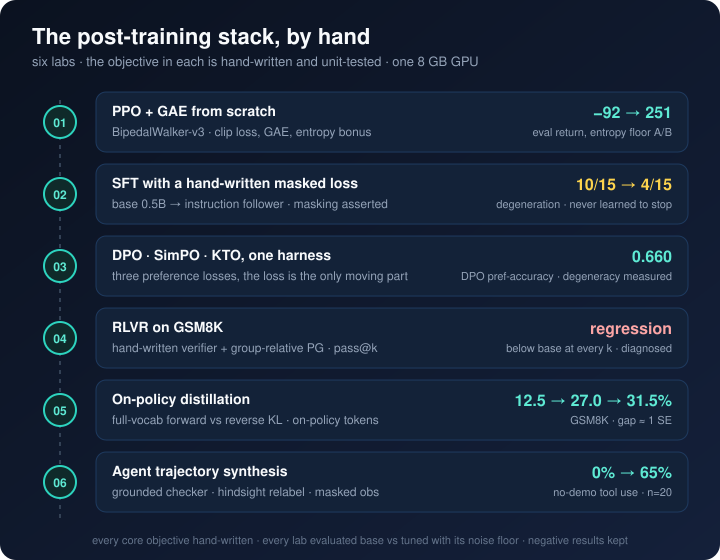

Projects

CiteSearch-RL
A 3B open model that searches, reads, and cites its sources — trained with reinforcement learning.
Hosted deep-research products push every turn of the research loop through a frontier API, and at volume
that is the cost. This project asks whether a small open model can be trained to run the same
multi-turn ReAct loop instead: search a corpus, read what it found, search again, and commit to an answer that
cites only passages it actually read. Two stages — distillation from gpt-4.1-mini acting as
the policy inside the real environment, then GRPO with rLLM + veRL on a single A100 — and every number
reported on frozen held-out and out-of-distribution sets with confidence intervals.
- Reward gated on evidence, not just answers. A citation counts only if the passage is gold and the agent called
readon it; no citations means zero reward; fabricated citations are penalised separately. A right answer with no evidence trail is treated as a lucky guess. - Teacher distillation done the safe way. The teacher is not asked to write trajectories — it is dropped in as the policy of the same environment, so every observation is real and every episode is graded by the same code as the student. A non-reasoning teacher, chosen so a 3B student is not taught to start chains it cannot finish.
- The skeptic's control is in the table. Three arms everywhere: base, base with a worked example in the prompt, and tuned. Prompting alone gets most of the raw correctness; what SFT adds that prompting cannot is the process — read-before-cite 0.198 → 0.810.
- RL taught a process that generalises. On the in-distribution held-out set the RL gain is inside the noise, and the card says so. On MuSiQue, never trained on, it is +4.0 correct and −8.7 points of stuck episodes, both significant, with reads up and searches down at constant turns.
- Built like a system. A frozen split registry asserted disjoint, batched vLLM evaluation with LoRA hot-swap, checkpoints and optimiser state mirrored to the Hub, a pinned rLLM/veRL/vLLM stack with each install bug documented, and a 24-item findings register that keeps the hypotheses that were killed by data.

ProactiveClaw
The assistant that comes to you.
Most assistants wait to be asked, so the things that slip are the ones nobody asks about — the email you meant to answer tonight, the “I'll call her before Thursday” you said out loud, the task deferred three mornings running. ProactiveClaw keeps a care registry of those things and tends it: every morning it expires snoozes, escalates repeated deferrals, flags broken promises, writes a brief, and schedules a few specific nudges. During the day it picks up commitments from ordinary conversation and closes them when you mention you're done.
- Proactiveness is a dial, not a model behaviour. Five levels from off to max and five situational modes resolve into concrete settings — and the limits (daily cap, quiet hours, spacing) are enforced in the scheduling code rather than left to the model.
- Deterministic housekeeping before any LLM call, so each review starts from an already-tidy, already-prioritised state.
- Learns from how you react. Per-sender and per-topic pattern learning with exponential decay, and a contextual bandit over day × hour arms that learns the times you actually reply.
- Two-tier memory and isolated sub-agents. Vector store plus knowledge graph with passive entity recall; long-running work dispatched to process-isolated sub-agents with scoped tool profiles.
- Optional by construction. Connectors are gated on config and credentials — their tools are removed from the model's tool list entirely, so it can't assume access it doesn't have.

Qwen3.8-27B, evaluated as an agent
Playable benchmarks for an open model: watch it work, then read the number.
A benchmark score tells you a model passed; watching it work tells you why. This project self-hosts
Qwen3.8-27B on one A100 with vLLM (qwen3_8_27b_vllm_server) and then puts it to work
in three places you can sit and watch: a streaming chat playground with 13 self-grading capability suites and a
playable τ²-bench console where the model serves a simulated customer, or you play the
customer yourself (qwen3_8_27b_workloads); and a sandboxed coding-agent harness with
twelve graded terminal tasks and a live run console (qwen3_8_27b_agent_harness).
- The real τ²-bench, not a re-implementation. Sierra's tau2-bench is a submodule; the console drives its orchestrator step by step across the airline, retail and telecom domains, streams every agent, customer and tool message, and ends with the evaluator's reward card explaining the grade. The numbers are stated as indicative, not leaderboard: the user simulator is Qwen itself.
- A coding agent you can watch inside a sandbox. A tool loop (bash, read, write, edit, finish) over Docker containers with no network, twelve Terminal-Bench-style tasks whose graders are validated with an oracle that must pass and a no-op that must fail. 12/12 with zero malformed tool calls, and the README says the set is now too easy.
- Suites that grade themselves. Vision, OCR and chart tests use generated images with known ground truth; coding snippets run against hidden tests; structured output is checked against schema, choice and regex; long context is a needle at 8K and 32K. When the grader was stricter than the model, the grader was fixed and the fix is logged.
- Thinking made visible. The playground streams the answer and the reasoning in separate panels, with off / low / medium / xhigh effort modes and matching sampling, image attach, and a demo tool loop you can see turn by turn.
- Deployment documented to the flag. vLLM with the qwen3 reasoning and tool-call parsers, a random API key instead of the guessable template default, and every gotcha hit on the way recorded: JSON-valued flags that crash-loop a pod, the renamed reasoning field, the new structured-outputs parameter.

Post-training labs
The modern LLM post-training stack, implemented by hand and evaluated honestly.
Six self-contained labs that build on each other: PPO with GAE → supervised fine-tuning → DPO / SimPO / KTO → RL with verifiable rewards → on-policy distillation → agent trajectory synthesis. In every one, the objective, reward, advantage or masking logic is written by hand and unit-tested; the data loading, training loop and evaluation gate are harness. Every lab reports base vs tuned on held-out data with its noise floor, and two of the six report a negative or mixed result rather than rounding it up.
- PPO from scratch on BipedalWalker: −92 → 184, stuck in a limp-gait local optimum; an entropy floor predicted from the theory and confirmed with an overlaid A/B took it to 251.
- SFT found a real failure a loss curve hides. Degeneration fell 10/15 → 4/15, but the model never learned to stop: the end-of-turn token is 0.7% of graded targets, so a token-averaged loss barely sees it.
- DPO's famous flaw, measured. Preference accuracy 0.660 with no length inflation, and the margin is entirely the difference-only artifact: chosen log-prob −3.91, rejected −7.89, margin = β × the gap exactly.
- RLVR that made the model worse, and why. Below base at every pass@k; a flat solve-rate, rising entropy and half-dead groups together diagnose too little training signal. The verifier probe was clean; the 40% shorter outputs were a side-effect of the group-relative advantage.
- On-policy beats off-policy distillation 31.5% vs 27.0% from a 12.5% base on GSM8K, with the caveat stated: the gap is about one standard error at n=200.
- Synthesised agent data that lifts tool use 0% → 65% without demonstrations, kept honest by a grounded checker that re-executes every trajectory and a relabelling step whose share is capped and whose goal entropy is reported.